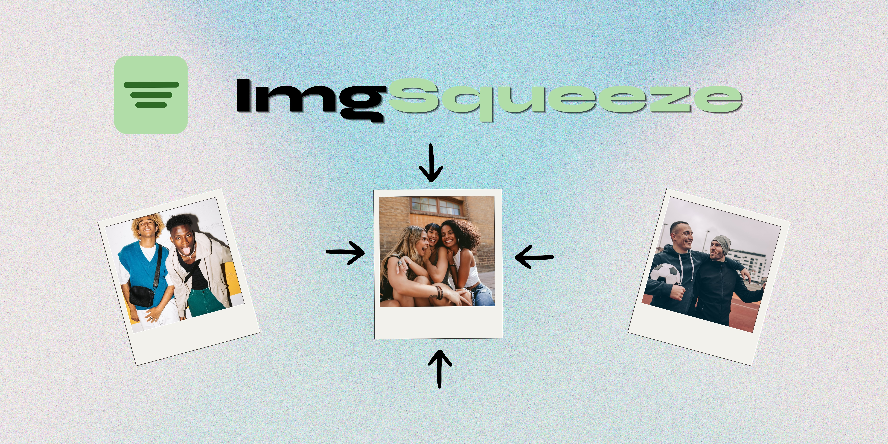

Prototype · Progressive Web App
A lightweight PWA that compresses, watermarks, renames, and exports photos in bulk — designed to install straight to a phone or desktop, with no app store required.

Anyone who works with image files understands the tedious prep work that comes with every batch: compressing large files, adding watermarks, renaming images consistently, and exporting everything somewhere usable.
Existing tools often handle only one part of the process, add usage limits, only work in the browser, or require larger editing software like Adobe Lightroom Classic.
I wanted to create a tool that made this workflow faster and more accessible across devices.
I was not the only person with this problem.
A Reddit post in the WordPress community asked for a single tool that could handle both image compression and watermarking. The comments suggested multiple tools, but no clear option handled everything without limits or extra steps.
The tools existed. The workflow was still fragmented.
The whole point was to remove friction. If a photographer has to think about the tool, the tool is in the way.
I reviewed existing tools like Watermarkly, which offers both image compression and watermarking.
However, each feature exists as a separate workflow. To compress and watermark the same images, users have to compress, save, re-upload, watermark, and save again.
Some controls also rely heavily on dropdowns and counters, adding unnecessary clicks for simple adjustments.
Users can upload one or multiple images and:
The design is intentionally minimal and easy to navigate, keeping the focus on the images and the task at hand.
Compression settings use a slider instead of counters, reducing clicks and making adjustments easier on mobile.
Settings are grouped into collapsible drawers to reduce clutter and keep the interface focused.
ImqSqueeze was built as a Progressive Web App so users can access it across devices and install it for a more app-like experience.
Changes automatically update in the preview so users can see the result before exporting.
Users can add text or image watermarks, adjust their appearance, and save watermark settings locally for future use.
The original mobile workflow downloaded images as files. On iOS, this added extra steps because images were saved to browser downloads instead of the photo library.
I switched to the Web Share API so users could access native sharing options and more easily save or send images on mobile.
ImqSqueeze was built with React and Vite, using vite-plugin-pwa for installable PWA functionality.
The Canvas API handles watermark rendering, while browser-image-compression compresses images locally in the browser.
JSZip packages batch exports, and the Web Share API improves the mobile export experience by using the device’s native sharing options.
I shared ImqSqueeze on social media while building and received early interest from photographers who recognized the workflow problem.
The tool is currently being tested by users while I collect feedback on usability, mobile behavior, and the overall image prep workflow.
I used AI throughout development to explore implementation options, debug issues, and move quickly from idea to working product.
My approach was to treat AI as a collaborator, not the decision-maker. I defined the problem, chose the features, tested the workflows, reviewed the code, and continuously evaluated the output through both a design and development lens. The first iteration worked, but it was clunky and hard to navigate. I continued refining the product based on usability, visual hierarchy, cross-device behavior, and the overall experience I wanted to create.
AI helped me move faster, but I remained responsible for deciding what worked, what needed to change, and how the final product should function and feel.
ImqSqueeze can be used directly in your browser or installed on your device for a more app-like experience.
Open ImqSqueeze in a supported browser and select the Install option in the address bar when available.